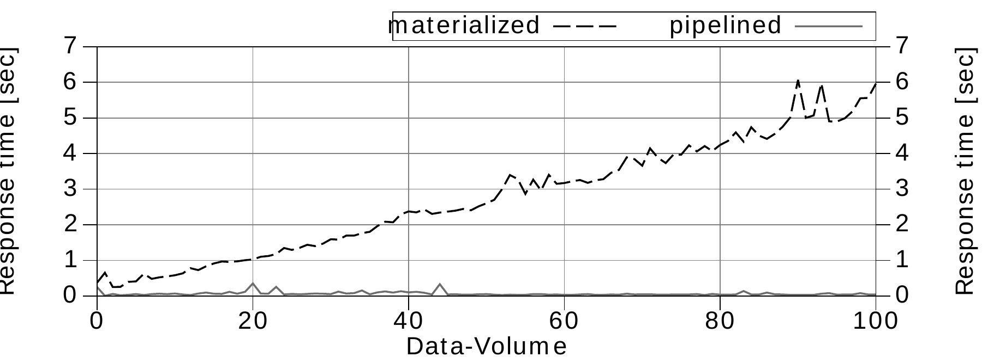
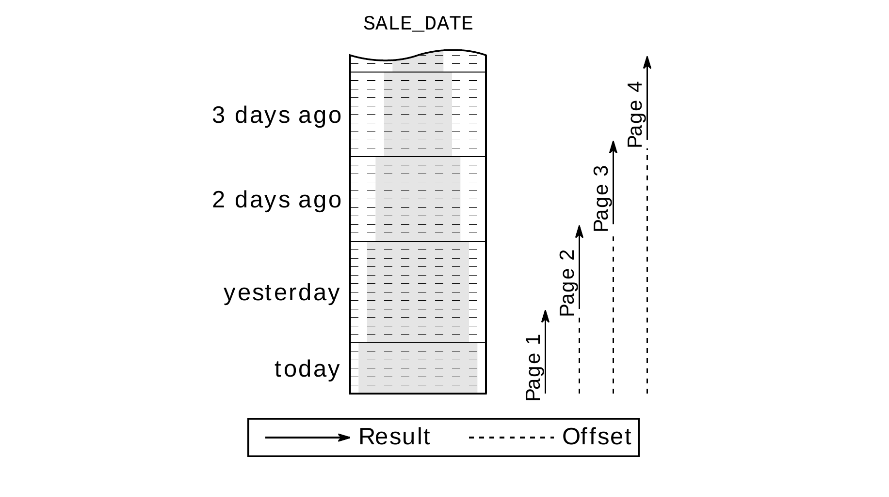

Chương 7
Partial Results
Đôi khi bạn không cần toàn bộ kết quả của một SQL query mà chỉ cần vài row đầu tiên, chẳng hạn để hiển thị mười message mới nhất. Trong trường hợp này, người dùng cũng thường được phép xem lại các message cũ hơn, bằng paging navigation truyền thống hoặc bằng biến thể hiện đại hơn là “infinite scrolling”. Tuy nhiên, các SQL query phục vụ chức năng này có thể gây ra vấn đề performance nghiêm trọng nếu phải sort toàn bộ message mới tìm ra được các message mới nhất. Vì vậy, pipelined order by là một cách optimization rất hiệu quả cho những query như vậy.
Chương này trình bày cách dùng pipelined order by để lấy partial result một cách hiệu quả. Dù syntax của các query này khác nhau giữa các database, cách các database thực thi chúng vẫn rất giống nhau. Một lần nữa, điều này cho thấy database nào rốt cuộc cũng như nhau — ai cũng phải xỏ quần từng ống một.
Querying Top-N Rows#
Top-N query là query giới hạn kết quả ở một số row nhất định. Đây thường là các query lấy những entry mới nhất hoặc “tốt nhất” trong một result set. Để query được thực thi hiệu quả, việc xếp hạng phải dùng pipelined order by.
Cách đơn giản nhất để chỉ fetch các row đầu tiên của một query là fetch đủ số row cần thiết rồi đóng statement. Đáng tiếc là optimizer không thể đoán trước điều đó khi lập execution plan. Để chọn được execution plan tốt nhất, optimizer phải biết rốt cuộc application có fetch toàn bộ row hay không. Nếu có, full table scan kèm explicit sort operation có thể cho performance tốt nhất; còn khi chỉ fetch mười row thì pipelined order by có thể tốt hơn — ngay cả khi database phải fetch từng row một. Tức là optimizer phải biết bạn có định dừng statement trước khi fetch hết các row hay không thì mới chọn được execution plan tốt nhất.
Trong một thời gian dài, SQL standard không hề đề cập tới nhu cầu này. Extension tương ứng (fetch first) mãi đến SQL:2008 mới được đưa vào, và hiện chỉ có trong IBM DB2, PostgreSQL và SQL Server 2012. Một mặt là vì đây là một non-core extension; mặt khác là vì mỗi database đã có giải pháp proprietary riêng từ nhiều năm nay.
Các ví dụ sau minh họa cách dùng những extension quen thuộc này qua một query lấy mười sale mới nhất. Phần nền luôn giống nhau: lấy toàn bộ sale, bắt đầu từ sale mới nhất. Top-N syntax của từng database chỉ đơn giản là dừng việc thực thi sau khi đã fetch mười row.
MySQL#
MySQL và PostgreSQL dùng limit clause để giới hạn số row được fetch.
SELECT *
FROM sales
ORDER BY sale_date DESC
LIMIT 10;Oracle Database#
Oracle database cung cấp pseudo column ROWNUM, tự động đánh số các row trong result set. Để dùng column này trong một filter, chúng ta phải bọc query lại:
SELECT *
FROM (
SELECT *
FROM sales
ORDER BY sale_date DESC
)
WHERE rownum <= 10;PostgreSQL#
PostgreSQL hỗ trợ fetch first extension từ version 8.4. Limit clause đã dùng ở trên vẫn hoạt động như trong ví dụ MySQL.
SELECT *
FROM sales
ORDER BY sale_date DESC
FETCH FIRST 10 ROWS ONLY;SQL Server#
SQL Server cung cấp top clause để giới hạn số row được fetch.
SELECT TOP 10 *
FROM sales
ORDER BY sale_date DESC;Bắt đầu từ release 2012, SQL Server cũng hỗ trợ fetch first extension.
Tất cả SQL query nêu trên đều đặc biệt vì database nhận diện chúng là top-N query.
Nếu optimizer biết rằng chúng ta chỉ cần mười row, nó sẽ ưu tiên dùng pipelined order by nếu phù hợp:
-------------------------------------------------------------
| Operation | Name | Rows | Cost |
-------------------------------------------------------------
| SELECT STATEMENT | | 10 | 9 |
| COUNT STOPKEY | | | |
| VIEW | | 10 | 9 |
| TABLE ACCESS BY INDEX ROWID| SALES | 1004K| 9 |
| INDEX FULL SCAN DESCENDING| SALES_DT_PR | 10 | 3 |
-------------------------------------------------------------Execution plan của Oracle thể hiện điểm dừng đã được lên kế hoạch thông qua operation COUNT STOPKEY. Tức là database đã nhận diện được top-N syntax.
Dùng đúng syntax mới chỉ là một nửa câu chuyện, vì muốn dừng việc thực thi một cách hiệu quả thì các operation bên dưới cũng phải được thực thi theo kiểu pipelined. Tức là order by clause phải được một index cover — trong ví dụ này là index SALE_DT_PR trên SALE_DATE và PRODUCT_ID. Nhờ dùng index này, database tránh được explicit sort operation, nên có thể gửi ngay từng row cho application khi vừa đọc nó từ index. Việc thực thi dừng lại sau khi fetch mười row, nên database không đọc nhiều row hơn số row được select.
Nếu không có index phù hợp trên SALE_DATE cho pipelined order by, database phải đọc và sort toàn bộ table. Database chỉ trả về row đầu tiên sau khi đã đọc xong row cuối cùng của table.
--------------------------------------------------
| Operation | Name | Rows | Cost |
--------------------------------------------------
| SELECT STATEMENT | | 10 | 59558 |
| COUNT STOPKEY | | | |
| VIEW | | 1004K| 59558 |
| SORT ORDER BY STOPKEY| | 1004K| 59558 |
| TABLE ACCESS FULL | SALES | 1004K| 9246 |
--------------------------------------------------Execution plan này không có pipelined order by và gần như chậm ngang với việc dừng thực thi từ phía client. Dù vậy, dùng top-N syntax vẫn tốt hơn, vì database không cần materialize toàn bộ kết quả mà chỉ cần mười row mới nhất. Nhờ đó, lượng memory cần dùng ít hơn đáng kể. Execution plan của Oracle thể hiện optimization này bằng modifier STOPKEY trên operation SORT ORDER BY.
Lợi ích của pipelined top-N query không chỉ là performance được cải thiện ngay lập tức mà còn là scalability tốt hơn. Nếu không dùng pipelined execution, response time của top-N query này tăng theo kích thước table. Ngược lại, khi dùng pipelined execution, response time chỉ tăng
theo số row được chọn. Nói cách khác, response time của một pipelined top-N query gần như độc lập với kích thước table. Chỉ khi B-tree depth tăng lên thì query mới chậm đi một chút.
Figure 7.1 cho thấy scalability của cả hai biến thể khi lượng dữ liệu tăng dần. Có thể thấy rất rõ response time tăng tuyến tính khi thực thi không có pipelined order by. Trong khi đó, response time của pipelined execution vẫn không đổi.

Dù response time của pipelined top-N query không phụ thuộc vào kích thước table, nó vẫn tăng theo số row được select. Vì vậy, select số row nhiều gấp đôi thì response time cũng tăng gấp đôi. Điều này đặc biệt đáng kể với các query “paging” dùng để tải thêm kết quả, vì những query này thường bắt đầu lại từ entry đầu tiên: chúng đọc các row đã hiển thị ở page trước rồi loại bỏ chúng, sau đó mới tới được kết quả của page thứ hai. Tuy vậy, vấn đề này cũng có cách giải quyết, như chúng ta sẽ thấy trong section tiếp theo.
Paging Through Results#
Sau khi đã implement một pipelined top-N query để lấy page đầu tiên một cách hiệu quả, bạn thường cũng cần một query khác để fetch các page tiếp theo. Khó khăn nảy sinh là query này phải bỏ qua các row thuộc những page trước. Có hai cách khác nhau để giải quyết vấn đề này. Cách thứ nhất là offset method: đánh số các row từ đầu, rồi dùng filter trên row number này để loại bỏ các row nằm trước page được yêu cầu. Cách thứ hai, mà tôi gọi là seek method, tìm entry cuối cùng của page trước rồi chỉ fetch các row tiếp theo.
Các ví dụ sau trình bày offset method, cách được dùng phổ biến hơn. Ưu điểm chính của method này là rất dễ dùng — nhất là với những database có keyword riêng cho nó (offset). Keyword này thậm chí đã được đưa vào SQL standard như một phần của fetch first extension.
MySQL#
MySQL và PostgreSQL cung cấp offset clause để loại bỏ một số row được chỉ định, tính từ đầu một top-N query. Sau đó limit clause mới được áp dụng.
SELECT *
FROM sales
ORDER BY sale_date DESC
LIMIT 10 OFFSET 10;Oracle Database#
Oracle database cung cấp pseudo column ROWNUM, tự động đánh số các row trong result set. Tuy nhiên, không thể áp dụng filter lớn hơn hoặc bằng (>=) trên pseudo-column này. Để làm được điều đó, trước hết bạn phải “materialize” row number bằng cách đặt alias cho column này.
SELECT *
FROM ( SELECT tmp.*, rownum rn
FROM ( SELECT *
FROM sales
ORDER BY sale_date DESC
) tmp
WHERE rownum <= 20
)
WHERE rn > 10;Lưu ý: lower bound dùng alias RN, còn upper bound dùng chính pseudo column ROWNUM.
PostgreSQL#
Fetch first extension cũng định nghĩa một offset ... rows clause. Tuy nhiên, PostgreSQL chỉ chấp nhận offset không có keyword rows. Syntax limit/offset đã dùng ở trên vẫn hoạt động như trong ví dụ MySQL.
SELECT *
FROM sales
ORDER BY sale_date DESC
OFFSET 10
FETCH NEXT 10 ROWS ONLY;SQL Server#
SQL Server không có extension “offset” cho top clause proprietary của mình, nhưng đã đưa vào fetch first extension từ SQL Server 2012 (“Denali”). Offset clause ở đây là bắt buộc, dù standard định nghĩa nó chỉ là một phần bổ sung tùy chọn.
SELECT *
FROM sales
ORDER BY sale_date DESC
OFFSET 10 ROWS
FETCH NEXT 10 ROWS ONLY;Ngoài sự đơn giản, method này còn một ưu điểm nữa: bạn chỉ cần row offset là fetch được một page bất kỳ. Tuy vậy, database vẫn phải đếm tất cả row từ đầu cho tới khi đến page được yêu cầu. Figure 7.2 cho thấy index range phải quét càng lớn khi fetch càng nhiều page.

Điều này dẫn tới hai nhược điểm: (1) các page bị xô lệch khi có sale mới được chèn vào, vì việc đánh số luôn bắt đầu lại từ đầu; (2) response time tăng dần khi duyệt lùi về các page càng xa.
Seek method tránh được cả hai vấn đề này vì nó dùng các giá trị của page trước làm mốc phân cách. Tức là method này tìm những giá trị phải nằm sau entry cuối cùng của page trước — điều có thể biểu diễn bằng một where clause đơn giản. Nói theo chiều ngược lại: seek method chỉ đơn giản là không select lại những giá trị đã hiển thị.
Ví dụ tiếp theo minh họa seek method. Để dễ trình bày, chúng ta bắt đầu với giả định mỗi ngày chỉ có một sale. Khi đó SALE_DATE là một unique key. Để select những sale phải nằm sau một ngày cụ thể, bạn phải dùng điều kiện less than (<) vì sort order là descending. Nếu sort theo thứ tự ascending, bạn sẽ phải dùng điều kiện greater than (>). Fetch first clause ở đây chỉ dùng để giới hạn kết quả ở mười row.
SELECT *
FROM sales
WHERE sale_date < ?
ORDER BY sale_date DESC
FETCH FIRST 10 ROWS ONLY;Thay vì row number, bạn dùng giá trị cuối cùng của page trước để xác định lower bound. Cách này có lợi rất lớn về performance, vì database có thể dùng điều kiện SALE_DATE < ? để truy cập index. Tức là database thực sự bỏ qua được các row thuộc những page trước. Hơn nữa, bạn cũng nhận được kết quả ổn định nếu có row mới được chèn vào.
Tuy nhiên, method này không dùng được nếu mỗi ngày có nhiều hơn một sale — như trong Figure 7.2 — vì khi dùng ngày cuối cùng của page đầu tiên (“yesterday”), query sẽ bỏ qua toàn bộ kết quả của ngày hôm qua, chứ không chỉ những kết quả đã hiển thị trên page đầu. Vấn đề là order by clause không tạo ra một row sequence deterministic, trong khi đây lại là điều kiện tiên quyết để dùng một range condition đơn giản cho việc ngắt page.
Nếu order by clause không deterministic thì theo định nghĩa, database cũng không trả về một row sequence deterministic. Lý do duy nhất khiến bạn thường nhận được row sequence nhất quán là database thường thực thi query theo cùng một cách. Tuy vậy, database hoàn toàn có thể xáo trộn các row có cùng SALE_DATE mà vẫn thỏa mãn order by clause. Ở các release gần đây, thực sự có thể xảy ra chuyện mỗi lần chạy query bạn lại nhận kết quả theo một thứ tự khác — không phải vì database cố ý xáo trộn kết quả, mà vì database có thể dùng parallel query execution. Tức là cùng một execution plan vẫn có thể cho ra row sequence khác nhau, vì các thread thực thi kết thúc theo thứ tự không deterministic.
Ngay cả khi functional specification chỉ yêu cầu sort “theo ngày, mới nhất trước”, chúng ta — những developer — vẫn phải bảo đảm order by clause tạo ra một row sequence deterministic. Để làm vậy, có thể chúng ta phải thêm vào order by clause những column bất kỳ, chỉ để chắc chắn có được row sequence deterministic. Nếu index dùng cho pipelined order by còn có thêm column khác, một khởi đầu tốt là thêm các column đó vào order by clause để vẫn tiếp tục dùng được index này cho pipelined order by. Nếu như vậy vẫn chưa có được sort order deterministic, chỉ cần thêm một hoặc vài unique column bất kỳ rồi mở rộng index cho tương ứng.
Trong ví dụ sau, chúng ta mở rộng order by clause và index bằng primary key SALE_ID để có một row sequence deterministic. Ngoài ra, chúng ta phải áp dụng logic “comes after” cho cả hai column cùng lúc mới có được kết quả mong muốn:
CREATE INDEX sl_dtid ON sales (sale_date, sale_id);
SELECT *
FROM sales
WHERE (sale_date, sale_id) < (?, ?)
ORDER BY sale_date DESC, sale_id DESC
FETCH FIRST 10 ROWS ONLY;Where clause ở đây dùng syntax “row values” ít người biết tới (xem box có tiêu đề “SQL Row Values”). Syntax này gộp nhiều giá trị thành một đơn vị logic, và các comparison operator thông thường áp dụng được cho đơn vị đó. Giống như với scalar value, khi sort theo descending order thì điều kiện less-than tương ứng với “comes after”. Tức là query chỉ xét những sale nằm sau cặp SALE_DATE, SALE_ID đã cho.
Dù row values syntax là một phần của SQL standard, chỉ một số ít database hỗ trợ nó. SQL Server 2012 (“Denali”) hoàn toàn không hỗ trợ row values. Oracle database về nguyên tắc có hỗ trợ row values, nhưng không thể áp dụng range operator trên chúng (ORA-01796). MySQL tính đúng giá trị của các row value expression nhưng không thể dùng chúng làm access predicate khi truy cập index. Còn PostgreSQL thì hỗ trợ row value syntax và dùng nó để truy cập index nếu có sẵn index tương ứng.
Tuy vậy, với những database không hỗ trợ row values đúng cách, vẫn có thể dùng một biến thể xấp xỉ của seek method — dù cách xấp xỉ này không gọn gàng và hiệu quả bằng row values trong PostgreSQL. Với cách xấp xỉ này, chúng ta phải dùng các phép so sánh “thông thường” để biểu diễn logic cần thiết, như trong ví dụ Oracle sau:
SELECT *
FROM ( SELECT *
FROM sales
WHERE sale_date <= ?
AND NOT (sale_date = ? AND sale_id >= ?)
ORDER BY sale_date DESC, sale_id DESC
)
WHERE rownum <= 10;Where clause này gồm hai phần. Phần thứ nhất chỉ xét SALE_DATE và dùng điều kiện less than or equal to (<=), nên nó select nhiều row hơn mức cần thiết. Phần này đủ đơn giản để mọi database đều có thể dùng nó để truy cập index. Phần thứ hai loại bỏ những row thừa đã được hiển thị ở page trước. Box có tiêu đề “Indexing Equivalent Logic” giải thích vì sao where clause được viết theo cách này.
Execution plan cho thấy database dùng phần thứ nhất của where clause làm access predicate.
---------------------------------------------------------------
|Id | Operation | Name | Rows | Cost |
---------------------------------------------------------------
| 0 | SELECT STATEMENT | | 10 | 4 |
|*1 | COUNT STOPKEY | | | |
| 2 | VIEW | | 10 | 4 |
| 3 | TABLE ACCESS BY INDEX ROWID | SALES | 50218 | 4 |
|*4 | INDEX RANGE SCAN DESCENDING| SL_DTIT | 2 | 3 |
---------------------------------------------------------------
Predicate Information (identified by operation id):
---------------------------------------------------
1 - filter(ROWNUM<=10)
4 - access("SALE_DATE"<=:SALE_DATE)
filter("SALE_DATE"<>:SALE_DATE
OR "SALE_ID"<TO_NUMBER(:SALE_ID))Access predicate trên SALE_DATE giúp database bỏ qua những ngày đã được hiển thị trọn vẹn ở các page trước. Phần thứ hai của where clause chỉ là filter predicate. Tức là database sẽ kiểm tra lại một vài entry của page trước, nhưng loại bỏ chúng ngay. Figure 7.3 cho thấy access path tương ứng.

Figure 7.4 so sánh các đặc điểm performance của offset method và seek method. Độ chính xác của phép đo không đủ để nhìn thấy khác biệt ở phía bên trái của chart, nhưng khác biệt hiện rõ từ khoảng page 20 trở đi.

Tất nhiên seek method cũng có nhược điểm, mà quan trọng nhất là khó dùng. Bạn không chỉ phải viết where clause hết sức cẩn thận, mà còn không thể fetch một page bất kỳ. Hơn nữa, muốn đổi chiều duyệt, bạn phải đảo ngược tất cả các phép so sánh và sort operation. Chính hai chức năng này — nhảy qua page và duyệt ngược — lại không cần đến khi user interface dùng cơ chế infinite scrolling.
WHERE (
(sale_date < ?)
OR
(sale_date = ? AND sale_id < ?)
)WHERE sale_date <= ?
AND (
(sale_date < ?)
OR
(sale_date = ? AND sale_id < ?)
)Dùng Window Function cho Pagination#
Window function mang lại thêm một cách nữa để implement pagination trong SQL.
Đây là một cách linh hoạt và, trên hết, tuân thủ SQL standard. Tuy nhiên, chỉ SQL Server và Oracle database mới dùng được window function cho pipelined top-N query. PostgreSQL không dừng index scan sau khi đã fetch đủ row, nên thực thi các query này rất kém hiệu quả. MySQL thì hoàn toàn không hỗ trợ window function.
Ví dụ sau dùng window function ROW_NUMBER cho một pagination query:
SELECT *
FROM ( SELECT sales.*
, ROW_NUMBER() OVER (ORDER BY sale_date DESC
, sale_id DESC) rn
FROM sales
) tmp
WHERE rn between 11 and 20
ORDER BY sale_date DESC, sale_id DESC;Function ROW_NUMBER đánh số các row theo sort order được định nghĩa trong over clause. Ở query bên ngoài, where clause dùng cách đánh số này để giới hạn kết quả ở page thứ hai (row 11 đến 20).
Oracle database nhận ra abort condition và dùng index trên SALE_DATE và SALE_ID để thực thi theo kiểu pipelined top-N:
---------------------------------------------------------------
|Id | Operation | Name | Rows | Cost |
---------------------------------------------------------------
| 0 | SELECT STATEMENT | | 1004K| 36877 |
|*1 | VIEW | | 1004K| 36877 |
|*2 | WINDOW NOSORT STOPKEY | | 1004K| 36877 |
| 3 | TABLE ACCESS BY INDEX ROWID | SALES | 1004K| 36877 |
| 4 | INDEX FULL SCAN DESCENDING | SL_DTID | 1004K| 2955 |
---------------------------------------------------------------
Predicate Information (identified by operation id):
---------------------------------------------------
1 - filter("RN">=11 AND "RN"<=20)
2 - filter(ROW_NUMBER() OVER (
ORDER BY "SALE_DATE" DESC, "SALE_ID" DESC )<=20)Operation WINDOW NOSORT STOPKEY cho biết không có sort operation (NOSORT) và database sẽ dừng thực thi khi chạm tới ngưỡng trên (STOPKEY). Vì các operation bị dừng này được thực thi theo kiểu pipelined, query này hiệu quả ngang với offset method đã giải thích ở section trước.
Tuy nhiên, thế mạnh của window function không nằm ở pagination mà ở các phép tính phân tích. Nếu chưa từng dùng window function, bạn chắc chắn nên dành vài giờ để tìm hiểu documentation tương ứng.